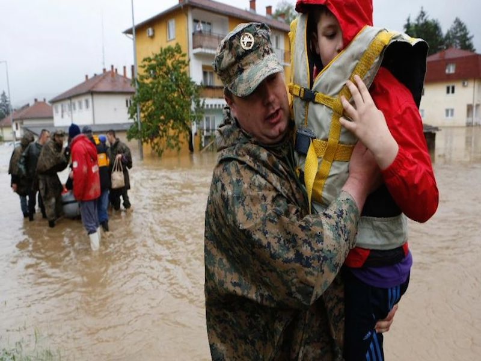

Balkan Relief
Dagnerous Floods
• Immense Damage
• Massive Efforts
Balkan Relief exists to partner with the local community in Nashville, Tennessee, USA through informing and spreading the effects the flooding had not only on the people, but help the national economies of countries that were already in a fragile condition have a smooth transition.
About the Effort

"A vast number of landslides have worsened the situation and relief efforts... worst flood in more than a century."
- Red Cross
Starting on May 13, the floods that many locals dubbed the anger of God, storms rang and caused the flooding of many minor rivers and tributaries. The Sava River was the main source due to the fact that it flows into all three of the countries affected.
The floods that occurred in the Balkans claimed the lives of 51 people and left many others without their homes and belongings. Foreign Minister of Bosnia estimates that 40% of the country has been affected.
As well the already very limited economies of the Balkans, countries have been further degraded with billions in euros in damage. Expected money in need of recovery for Bosnia is $1.8 billion and $1.5 billion for Serbia.
On this website, we will lead you to a range of options to directly donate to the country of your choice through large organizations directing relief efforts in majorly affected regions.
2013 Highlights
Guatemalan
couple gives back
One couple who have huge hearts for this community often serves with their gifts and skills. She is a psychologist who provides training for the Guatemalan team. He is a dentist who provides free dental care to the children in La Limonada, at the safe home, and for staff members.
Bloggers Trip
Special thanks to Katie and Tim Høiland, Scott Bennett, Paul Burkhart, and Dana Byers and her family for being a part of our 2013 Bloggers Trip. Their time, hearts, words and photos helped to convey the stories of La Limonada in a way that we have never experienced in such a short time.
5th
Anniversary Gala
In May of 2013 we celebrated our 5th Anniversary with events in Raleigh and Cincinnati, and with an online campaign for those who couldn’t attend the live events. More than 250 people attended the events and, combined with the online campaign, invested $53,760 to support our Scholars program.
New
team members
In 2013, four people joined the Lemonade International team. Tim and Katie Høiland (co-directors of communication), Daniela Lombardo (education development director), and Lindsay Schupbach (stateside sponsorship coordinator & education consultant) have been an incredible addition to an already amazing team of people.
Full Circle
Coffee Project
An exciting experimental coffee project developed in partnership with Josh and Amy Allen, Jubala Village Coffee and Ekklesia – Church at Raleigh. The Full Circle Coffee Project brand of coffee sourced from Guatemala at better-than-fair-trade prices, raised over $3,000 in profits that supported our work in solidarity with the people of La Limonada.
Launch of the
Root Collective
A partnership was established with The Root Collective—an online retailer connecting shoppers with artisans, communities with each other, and reminding society of humanity. Selections of their products are made by artisans who live and work in La Limonada—including shoes, handbags, and jewelry made by artisans in our Economic Development programs.
Strategic Focus
2014 and Beyond
Community Development Through Child Sponsorship
Lemonade International and Vidas Plenas (our partner organization in Guatemala) are rooted in, and motivated by, Christian faith. While our staff members come from different backgrounds and belong to different churches, we are united in our commitment to God’s call to love all people and to seek justice for those who are oppressed.
Scholars Program: A Bridge To Adulthood
In order to strengthen our Scholars program, a full-time Scholars program director, Yoli Prado, is now in place. Yoli serves as a liaison between parents and schools for more than 50 students in 7th grade and beyond. Our plans include providing this same opportunity each year for every one of our graduating 6th graders.
Clarity of Purpose
Early in 2014, we clarified our mission as an organization, and the core values that inform our work. In the years to come the following statements will guide us, and serve as criteria for measuring our effectiveness as an organization.
Our Mission
Lemonade International exists to partner with local leaders as they facilitate community development programs in solidarity with the people of La Limonada in Guatemala City.
Our Values
Dignity: We believe all people have inherent worth, with unique gifts given by God to share with others.
Solidarity: We stand with the marginalized people of La Limonada and with the committed staff of Vidas Plenas.
Deep Relationships: We believe in listening, knowing, and honoring the stories of community members, staff, donors, and partners.
Authenticity: We seek accountability at all levels to ensure honesty, transparency, and effectiveness in everything we do.
Partnership: We partner with one community, acting as a conduit for generosity and love.
Lemonade International and Vidas Plenas (our partner organization in Guatemala) are rooted in, and motivated by, Christian faith. While staff come from different backgrounds and belong to different churches, we are united in our commitment to God’s call to love all people and to seek justice for the oppressed. As we serve the people of La Limonada, we seek to partner with all people of goodwill and common cause regardless of race, religion, or any other status.
From the
Board of Directors
In April 2013, my family and I had the privilege of visiting La Limonada. We were captivated by the community, to say the least. The experience of seeing God at work among the people of La Limonada led us to sponsor a young girl and her mother, whom we met on the trip. We saw first-hand that life change is happening one relationship at a time and consider it a special opportunity to get to play a small part.
After returning home, we continued to pray for the work being done and relational bridges being built in La Limonada. My children often asked me for updates on the people of the community. Imagine my family's joy when I was invited to serve on the Lemonade International board! It is a blessing to us to hear updates, pray for, and invest in the ministry happening in La Limonada every day.
Thank you from the bottom of my heart to those of you who are investing time, money, and prayer into La Limonada. God is doing a restorative work in La Limonada, and every effort matters. Nothing is wasted, and it all brings glory to God.
With a grateful heart,
Dana Byers
Lemonade International Board Member
Board of Directors
Ray Strecker
Kevin Peyton
Todd Hiestand
Rebecca Caswell
Dana Byers
Bill Cummings
Guatemala Team
Ingrid Jeaneth Alonzo Bran
Elba Yaneth Alva Lima
María Isabel Arriola
Sonia Maricela Barrera Godinez
Rosa Hilda Barrientos de Saregure
Lucía Elizabeth Chach Zapón
Abner Moises Chajaj Solis
Catalina Chupina Chimil de Yool
Mérlin Arcely
Miriam De López
Heidy Bélen Díaz Pérez
Susan Evertsz Hahmann de Mejia
Tita Evertsz
Rebecca Gant
Daniela Lombardo
Sarah Lauffer
Gladiz Carina García Menchú de Chang
Elubia Mariela Gómez Hernández
Celica Galicia Juracan Saquic
Marleny Elizabeth Lima López
Hilda Marina López de Sánchez
Sofí Majús
María Guadalupe Matzar Coch
Gloria Anabella Menchú Castillo
Karla Ivonne Paredes Yool
Yoli Prado
Jeymi Aleida Reyes
Magda Haydeé Reyes Pérez
Edgar René Rodas Contreras
Mirza Janina Rodríguez Pérez
Sofi Scoffield
Leonor Sandigo
César Leonardo Saregure Pineda
Néstor Raúl Sicajá Bringuez
Victor Samuel Brizuela Martinez
Mayrita Judith Tebalán de Ramos
Verito Velásquez Alvarez de Soto
Ana Xiloj Xom
Priscila Yool Chupina de Saregure
Damaris Ester Yool Chupina de Sicaja
Salma Guzman
Alma Herrera
Betty Moran
Inna Sinkevich
Mirna Juárez
Esperanza Monterroso
Diana Rosales
Stateside Team
Bill Cummings
Cherie Cummings
Sommer Wisher
Terry Bracey
Lindsay Schupbach
Katie Høiland
Tim Høiland
Alejandra Urdaneta (Intern)
Special Thanks
Adam & Katy Watts
Amber Wright
Apple Matching Gifts Program
Athentikos - Nashville, TN
Audria Culaciati
Beatriz Woodall
Bethany & Thanh Tran
Bob & Amy Neiman
Brad Nortman
Brady & Jasmine Sullivan
Brenda Hanna
Brian & Lindy Cross
BridgePoint Bible Church - Houston, TX
Carlisle Evangelical Free Church - Carlisle, PA
Carolina Microfinance Initiative - UNC Chapel Hill
Center for Transforming Mission - Tacoma, WA
Charlene Dark
Charlotte Dunaway
Cheri Janssen
Chris Gorsuch
Christopher Nathan Kattner
Cincinnati Christian School - Cincinnati, OH
Cincinnati Occupational Therapy Institute - Cincinnati, OH
Cooper Industries Foundation - Houston, TX
Dan & Kelsey Hoffman
Dana & Chris Byers
Daniela Lombardo
Dave & Shannon Wik
David & Geralyn Kiser
David & Katherine Shonerd
Deanna DiSarro
Diane Reeves
Dienetics - Jenison, MI
Dominick & Christen DiGerlando
Dorene Gorsuch
Doug & Leah Arrington
Dr. Baron Holt - Raleigh, NC
Ekklesia - Raleigh, NC
Elisabeth Stenner
Elise Janssen
Elizabeth Holland
Emily Aker
Evergreen Community Church - Raleigh, NC
Fidelity Charitable Gift Fund
First Covenant Church of Sacramento - Sacramento, CA
Flipside Christian Church - Madera, CA
Forest Hill Church - Charlotte, NC
Formstack - Indianapolis, IN
Frank & Tammie Dame
Friendship Baptist Church - Montalba, TX
in situ studio - Raleigh, NC
Istrouma Baptist Church - Baton Rouge, LA
Jay Armstrong
Jamie Tharp
Jerome & Denise Lazarczyk
Jesse Perales III
John & Danielle Perry
John III and Dana Yockey
Jonathan Seda
Joshua Casella
Juan Pablo & Sonia Soto
Jubala Village Coffee - Raleigh, NC
Judy & Paul Hoskins
Julie & Bryan Matchell
Julie & Ken Fleming
Karen Burke
Kathleen Schwab
Ken & Cheryl Cummings
Kenneth Lentz
Lifechurch
Linda & Kevin Routh
Linda McCallian
Lindsay & Marcelo Schupbach
Lyle & Vickie Henkel
Lynn Aeiro
Maria Southman
Marianne & Bob Lintz
Mark & Viola Goodacre
Michael Mann
Morgan & Sandy Dean
Nathan & Janele Good
National Christian Foundation
Nona & Kevin Peyton
Ordinary Community Church - Liberty Township, OH
Otilia & Ray Rivera
Paul & Carmen Gant
Proctor Academy - Andover, NH
Rachel & Tony Rodgers
Ralph Schoenrock
Ray & Carole Strecker
Rebecca Caswell
Regina & David Smith
Renaissance Charitable Foundation
Renee Engberg
Rivers Crossing Community Church - Kings Mills, OH
Rosalie Culaciati
Sandra & Sis-Obed Torres
Sara Brumfield
Sarah & Guillermo Quezada
Scott & Sharon Williams
Steve & Linda Lindholm
Susan Olmstead
Tammi Palpant
Tanya Brown
The Root Collective
The Well - Newtown, PA
Thomas Tutolo
Tim & Katie Hoiland
Todd & Tami Sneller
Tracy & Kevin Rains
Tyra & Paul Stephens
Women at Risk International - Wyoming, MI
Zack Tomlin
Thank you for an incredible summer. We are grateful for your support through either financial donation or spreading awareness, and the passion you have for joining us to serve the people affected by the Balkan floods.
— The Lemonade International Team: Stefan Antic, Tejas Manohar, Daniel Nicastro